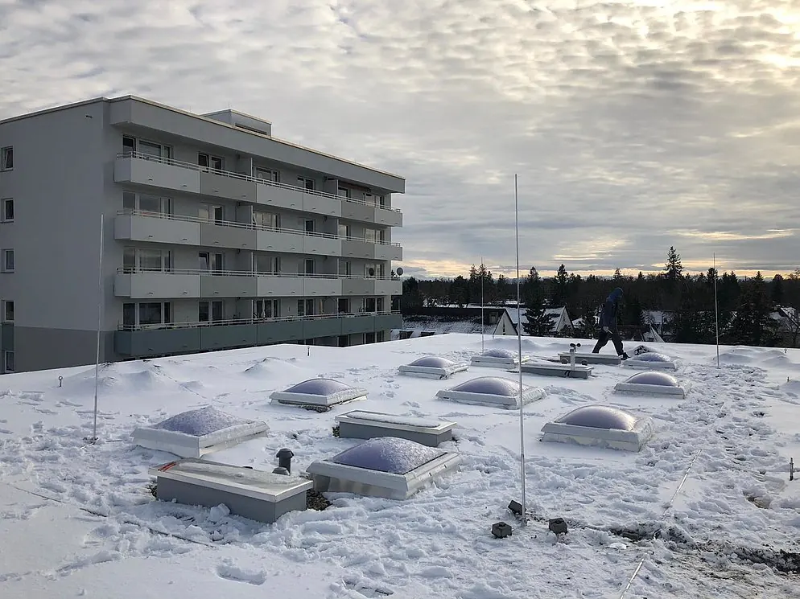
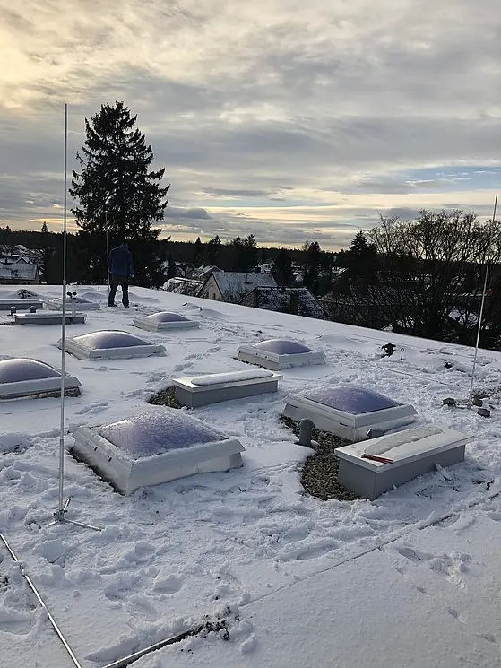

Damit nicht plötzlich der Blitz einschlägt
Blitz- und Überspannungsschutz
Blitzschläge stellen nicht nur eine Gefahr für Gebäude dar, sondern können sämtliche im Stromkreis befindlichen Geräte zerstören. Eine professionelle Blitzschutzanlage ist die geeignete Sicherheitsmaßnahme.

Überspannungen — unterschätzte Gefahr
Überspannungen werden noch immer häufig unterschätzt. Es handelt sich dabei um Spannungsimpulse, sogenannte Transienten, die nur für Sekundenbruchteile auftreten. Gründe hierfür können direkte, nahe oder ferne Blitzeinschläge sowie Schalthandlungen eines Elektrizitätswerks sein.
Direkte und nahe Blitzeinschläge
Direkt- oder Naheinschläge sind Blitzeinschläge in das Gebäude, in dessen unmittelbare Umgebung oder in die eingeführten Versorgungsleitungen — etwa Niederspannungsstromversorgung, Telekommunikations- und Datenleitungen. Die entstehenden Stoßströme und das zugehörige elektromagnetische Feld stellen eine besondere Bedrohung für das zu schützende System dar.
Ein direkter Blitzeinschlag verursacht durch den fließenden Blitzstrom eine Potenzialanhebung von mehreren 100.000 Volt an allen geerdeten Geräten. Das ist die stärkste Beanspruchung elektrischer Anlagen in Gebäuden.
Zusätzlich entstehen Überspannungen in der Gebäudeanlage durch die Induktionswirkung des elektromagnetischen Blitzfeldes. Deren Energie ist geringer als die des direkten Blitzstoßstromes, für empfindliche Elektronik aber ausreichend zerstörerisch.
Aus unserer Arbeit
Beispiele


Kontakt
Sprechen wir darüber.
Ob eine defekte Steckdose, ein überfälliger Prüftermin oder eine Halle, die neu verkabelt werden muss — schildern Sie uns kurz Ihr Anliegen. Wir sagen Ihnen offen, ob wir der richtige Betrieb dafür sind.